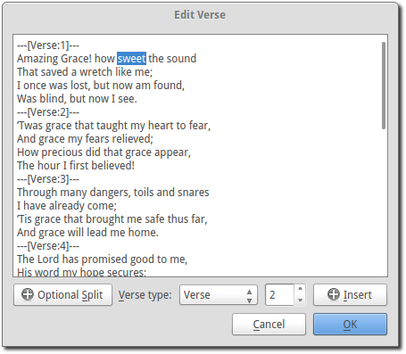
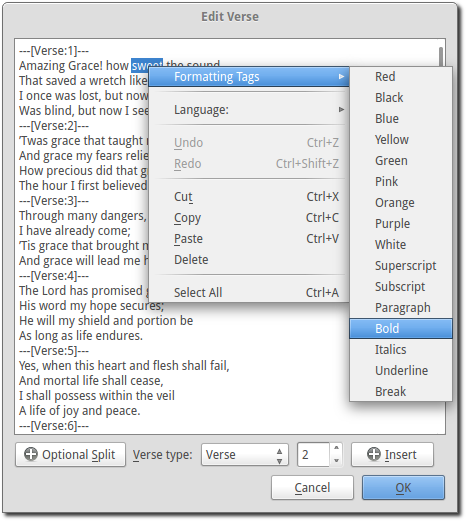
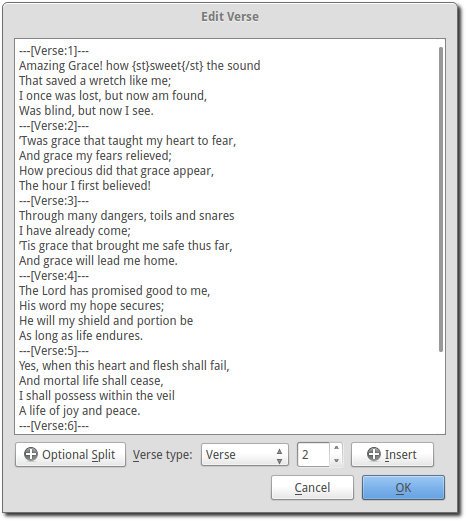
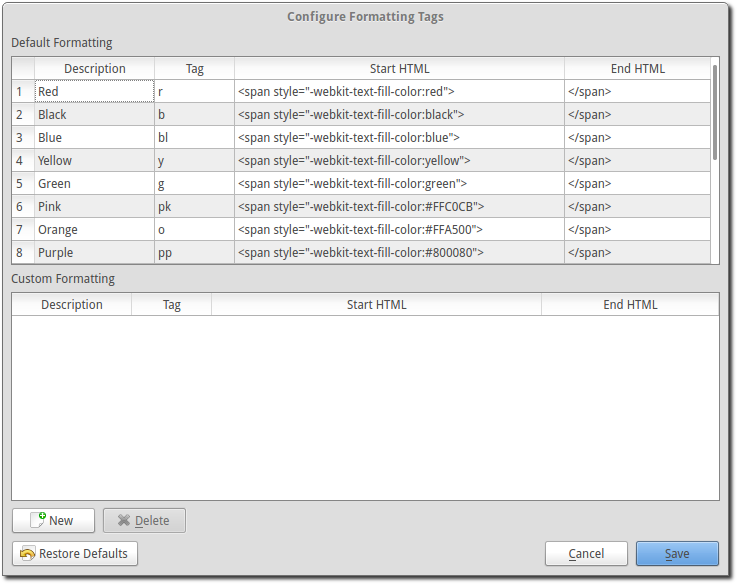

Formatting Tags
OpenLP has the ability to add additional formatting to text in songs and custom slides through the use of Formatting Tags. Formatting Tags provide a shortcut to use HTML and CSS to format text.
Formatting Tags consist of two parts, a starting and an ending tag, each tag consisting of a brace, tag identifier, brace.
Note: HTML or CSS cannnot be directly entered into OpenLP. They must be defined through the use of Formatting Tags
Using a Formatting Tag
Formatting Tags can be inserted by typing the tag into the text that is being edited or by using the mouse to select and insert the tags. Formatting Tags can not span across page breaks. If a tag begins with text on one side of a page break it cannot stretch across the break. Instead, two sets of tags will need to be used, one set on each side of the break.
Adding Formatting Tags Using Text
To use Formatting Tags surround the text with a starting tag {} followed by the text to be formatted. End the text to be formatted with an ending tag {/}.
Example of Use
To make a section of text bold you would do the following in a custom slide or song:
Amazing grace how {st}sweet{/st} the sound.
This will yield the text as:
Amazing grace how sweet the sound.
Adding a Formatting Tag Using The Mouse
Formatting Tags can be inserted by selecting the text you wish to format. Right click on the text and select followed by selecting the desired formatting.
Example of Use
Select the song or custom slide to edit. Next, highlight the text that you want to be formatted.
Right click on the selected text and select followed by selecting the desired formatting for the selected text.
The formatting tags should now be inserted.
Included Formatting Tags
The following tags are included with OpenLP
- {r} red text
- {b} black text
- {bl} blue text
- {y} yellow text
- {g} green text
- {pk} pink text
- {o} orange text
- {pp} purple text
- {w} white text
- {su) superscript text
- {sb} subscript text
- {p} paragraph
- {st} bold
- {it} italics
- {u} underline
- {br} break
Configuring Formatting Tags
To add new Formatting Tags go to
Click the New button to add new Formatting Tags. Enter the description of the Formatting Tags followed by the tag. The tag must be unique. You do not need to put the in braces {} here, only when using the tag. Finally, enter in the HTML or CSS for the tag and click Save to complete adding new Formatting Tags.
To delete Formatting Tags that you have entered click on the Formatting Tags from the list and click Delete.
Note: if a tag is deleted that is in use in a song or custom slide the slide will display the tags {} without any formatting. The deleted tags will need to be manually deleted from the songs or custom slides.